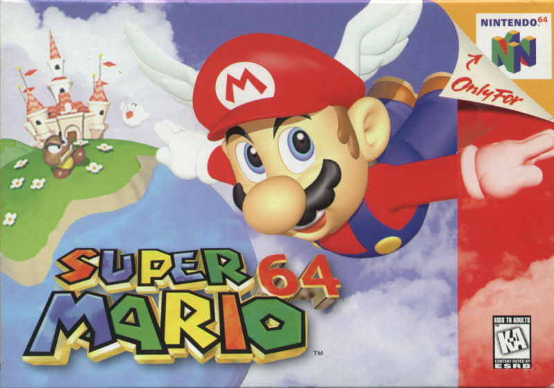
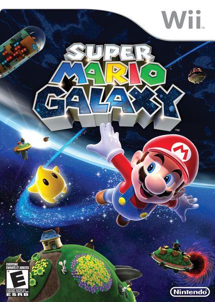
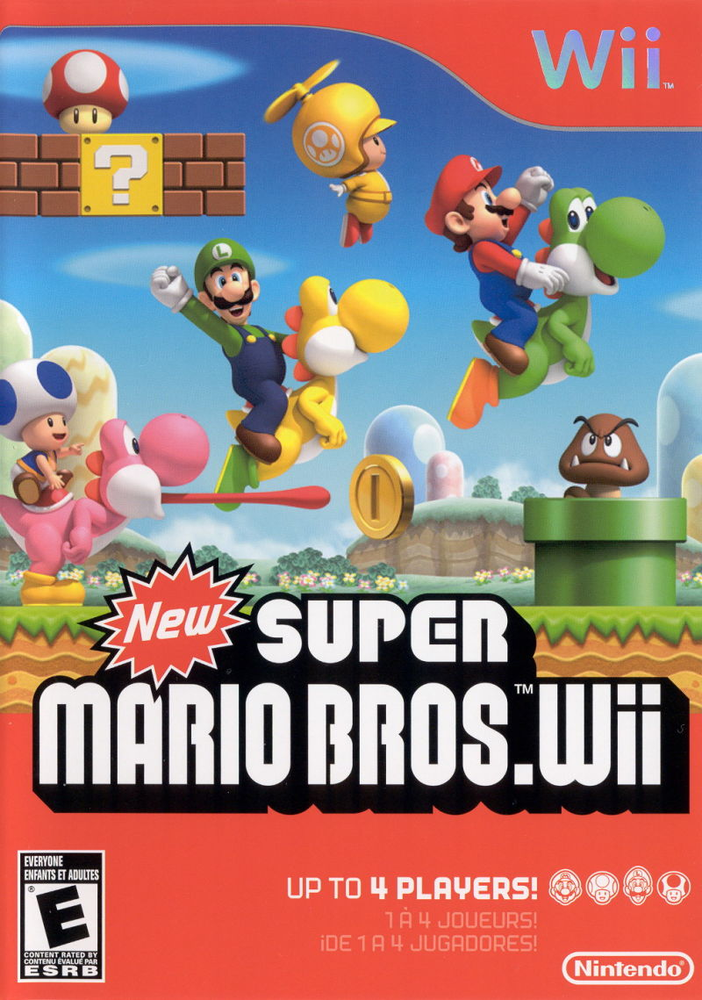
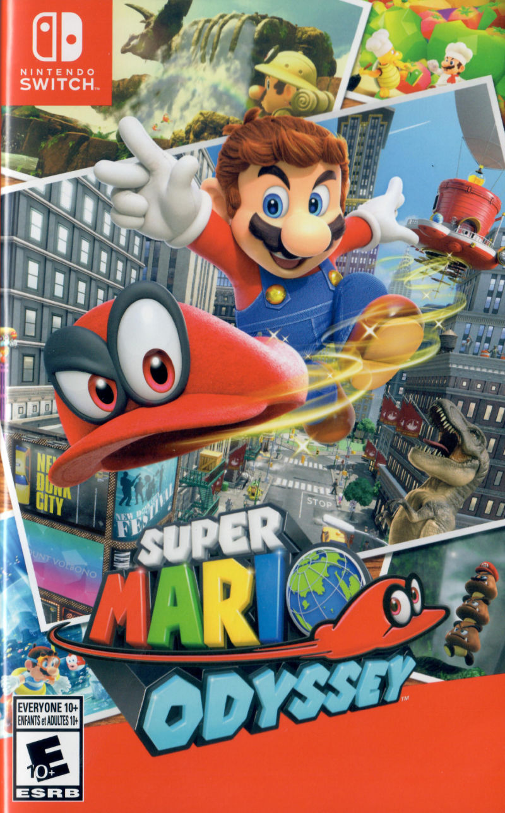

Super Mario Bros.
Console: NES Released: 1985

Super Mario Bros. was the first side-scrolling 2D platform game to feature Mario. It established many core Mario gameplay concepts. The brothers Mario and Luigi live in the Mushroom Kingdom, where they must rescue Princess Toadstool (later called Princess Peach) from Bowser. The game consists of eight worlds, each with four sub-levels, totaling 32 sub-levels altogether. Though the worlds differ in themes, the fourth sub-level is always a fortress or castle that ends with a fight against Bowser (or one of his minions disguised as him). The game is one of the best-selling video games of all time.
Super Mario Bros. 3
Console: NES Released: 1990

Super Mario Bros. 3 is divided into eight themed worlds, each with 6–10 levels and several bonus stages displayed as
locations on a mapped overworld. These locations are not necessarily in a linear order, and the player is occasionally
permitted to skip levels or play the game out of order. Completed levels cannot be replayed. A world's final level is a
boss stage. The penultimate boss stage is a side-scrolling level atop an airship ("Doom Ship") with a fight against one
of Bowser's seven Koopalings. The game introduced a diverse array of new power-ups, including flight as Raccoon Mario.
Bowser is again the final boss.
Super Mario 64
Console: N64 Released: 1996

Super Mario 64 was the first 3D game in the series. Each level, or course, is an enclosed environment where the player
is free to explore in all directions without time limits. The player collects Power Stars that appear after completing
tasks to unlock later courses and areas. The game introduced moves such as punching, triple jumping, and using a Wing
Cap to fly. Mario must once again save Princess Peach from Bowser, and collect up to 120 Power Stars from the paintings
and return them to her castle, the overworld. The game's power-ups differ from previous games, now being three
different hats with temporary powers: the Wing Cap, allowing Mario to fly; the Metal Cap, turning him into metal; and
the Vanish Cap, allowing him to walk through obstacles.
Super Mario Galaxy
Console: Wii Released: 2007

Super Mario Galaxy is set in outer space, where Mario travels between "galaxies" to collect Power Stars, earned by completing quests or defeating enemies. Each galaxy contains a number of planets and other space objects for the player to explore. The game's physics system gives each celestial object its own gravitational force, which lets the player circumnavigate rounded or irregular planetoids by walking sideways or upside down. The player is usually able to jump from one independent object and fall towards another close object. Several new power-ups appear, and many of these return in its sequel, Super Mario Galaxy 2.
New Super Mario Bros. Wii
Console: Wii Released: 2009

In New Super Mario Bros. Wii, the game features 4-player co-op and new power-ups: the Propeller Mushroom, the Ice
Flower, and the Penguin Suit. The Propeller Mushroom launches the player into the air by shaking the Wii Remote. The
Penguin Suit enhances traction of sliding and speed and agility of swimming abilities, in addition to the ice ball
projectiles that are provisioned by the Ice Flower. Players can ride Yoshi. Like in its predecessor, there are three
hidden Star Coins to find in each level, which can be used to unlock movies with gameplay tips.
Super Mario Odyssey
Console: Switch Released: 2017

Super Mario Odyssey is a return to the open-world "sandbox" 3D style of game last seen in Super Mario Sunshine. After
Mario's cap is possessed by a spirit named Cappy, he is able to use it to temporarily "capture" enemies and objects and
utilize their powers. Like previous sandbox 3D games, the game's worlds contain a large variety of objectives that can
be achieved in a non-linear order before progressing. Super Mario Odyssey was critically acclaimed, with many
describing it as one of the greatest games of all time.